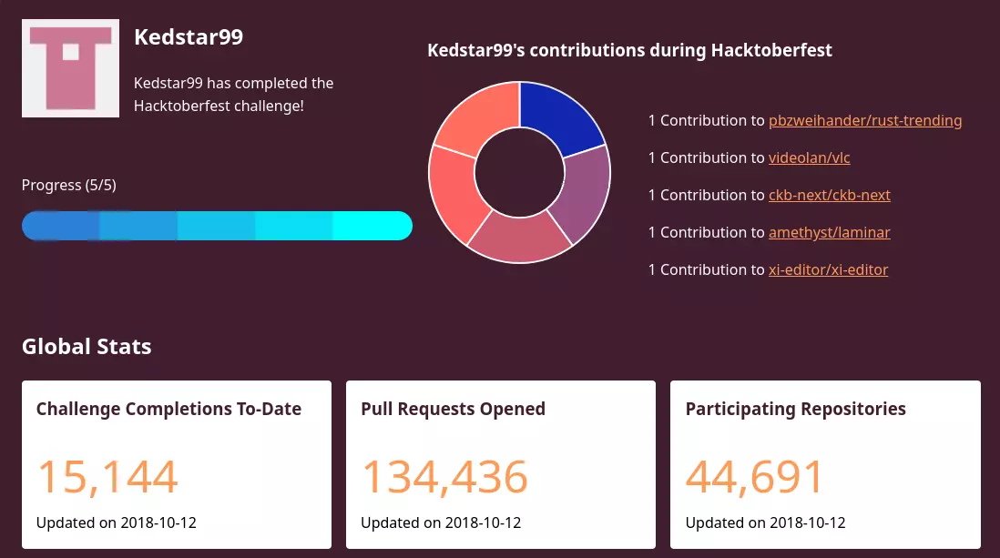

Current Projects and Contributions
This year, one of my major goals has been to build a larger set of open source contributions. In this venture I have been rather successful as this year as I have managed to make multiple minor contributions to major projects in 2018. This includes the following contributions.
Proton is a brand new mechanism introduced by Valve to enable Windows games to run on non-Windows
platforms. It works by integrating
various technologies such as WINE and DXVK. These tools translate Windows System calls and DirectX calls
to those which are Linux compatibles.
As a result of their use, these technologies have vastly expanded the number of games that are playable
on Linux.
Fixed update checking in VSCode for snap users. [PR63716]
VSCode is an editor provided by Microsoft and based on Electron. It offers IDE like features
across a variety of languages that aid in programming development.
Enabled better ISO C compliance and build mechanisms for the project CKB-next. [PR206, PR221, PR228]
CKB-next is an open source driver that enables RGB and communication for Corsair keyboard products on
Linux platforms.
Aided with packaging Thunderbird snaps for Ubuntu platforms via snaps.
Thunderbird is an open source email and calendar based application developmed by the Mozilla Foundation.
It is based on similar technologies to Mozilla Firefox.
Aided with packaging vlc snaps for better snap compliance. [PR75]
VLC is an open source media program that enables the playback of video and audio.
Enabled snap theme support for the Adapta-GTK theme for snap packages.

Adapta-GTK is a theme created by Tista-500. It is designed to recreate Google's material design for
Linux.
Through the above experiences, I have gained a decent amount of experience in contributing to a wide-variety of packages. This includes following through with feature requests from email all the way to implementation. In addition, I learned and applied a wide variety of skills that have proved useful for contributing. This includes the following.
- Successfully utilised Docker to aid in building and packaging a wide variety projects.
- Learned new tricks across various version control platforms including Git, Mercurial and Bazaar. I also learned how to sign my requests and publish them on Launchpad.
- Discovered various linting utilities including clippy (Rust), Pylint and Shellcheck. These have been useful for finding potential problematic areas in open code.
- Learned how to provide meaningful commit messages, and etiquette for pull requests.
